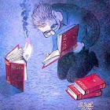

I am undergraduate student at Middle East Technical University, Department of Chemistry and Department of Physics. I am currently working on Graph Representation Learning with Ahmet Rifaioglu.
| 03/2021 | PyTorch Implementation of Learnable Aggregator for GCN is now available. |
| 03/2021 | TensorFlow Implementation of Graph Node-Feature Convolution for Representation Learning is now available at Papers with Code. |
| 02/2021 | TensorFlow Implementation of Learnable Aggregator for GCN is now available. |